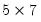
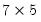
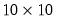

@transpose Transpose of a matrix object. Syntax: @transpose(m) m: matrix, vector, rowvector, sym Return: matrix, rowvector, vector, sym The result is a matrix object with the number of rows and columns and the element indices reversed from the original matrix. This function is an identity function for a sym, since a sym by definition is equal to its transpose. Examples matrix m1 = @mnrnd(5, 7) matrix m1t = @transpose(m1) creates a  matrix M1 filled with normal random variables, and the  matrix transpose. vector v1 = @mnrnd(10) matrix m2 = v1 * @transpose(v1) matrix m3 = @outer(v1, v1) creates the 10-element vector V1 and forms its  outer product matrix in two ways. Note that the transpose of matrix objects may also be obtained using the “@t” object data member function, as in matrix m4 = v1 * v1.@t Cross-references See “Matrix Data Members”“Vector Data Members”, and “Sym Data Members”.